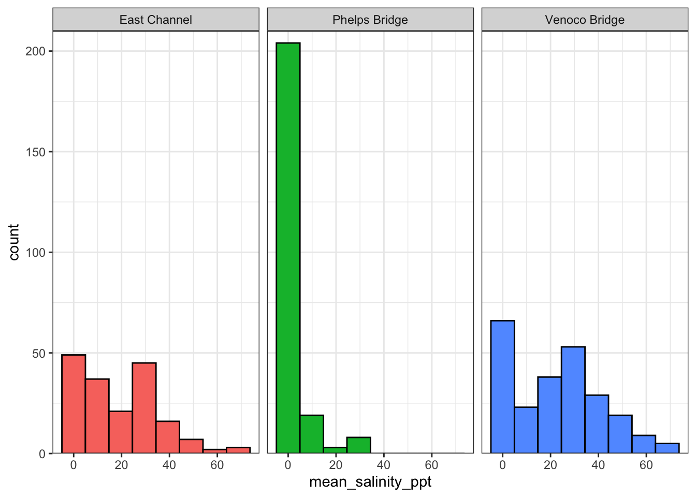
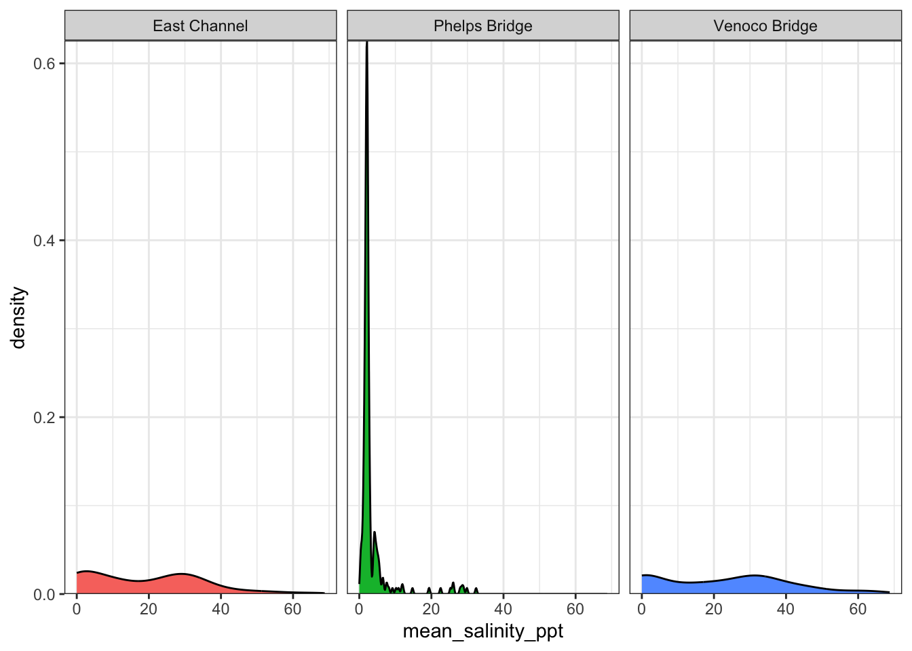

\(\bar{y}\) is the sample mean, which is calculated as the sum of all observations \(y_i\) divided by the number of observations (\(n\)).
Median:
The median is determined by finding the middle value. If \(n\) is odd, the median is the middle value in the dataset. If \(n\) is even, the median is the mean of the two middle values.
Standard deviation:
\[
s = \sqrt{\frac{\sum(y_i - \bar{y})^2}{n - 1}}
\]
\(s\) is the sample standard deviation, which is calculated as the square root of the sum of the squared difference between an observation \(y_i\) and the sample mean \(\bar{y}\) divided by the number of observations \(n\) minus 1.
Column height represents number of observations falling into a given bin range on the x-axis
Pay attention to:
the shape of the distribution
the center of the distribution
the peak(s) of the distribution
histogram <-ggplot(data = wq,mapping =aes(x = mean_salinity_ppt,fill = site_name)) +geom_histogram(bins =8,color ="black") +facet_wrap(~ site_name) +scale_y_continuous(expand =c(0, 0),limits =c(0, 210)) +# long line here long line here long line here long line here long line here long line here long line here long line here theme_bw() +theme(legend.position ="none")histogram

Density plots:
x-axis: continuous variable of interest
y-axis: probability density
smoothed function representing the shape of the distribution
note: area under that smoothed function = 1
Pay attention to:
the shape of the distribution
the center of the distribution
the peak(s) of the distribution
density <-ggplot(data = wq, mapping =aes(x = mean_salinity_ppt,fill = site_name)) +geom_density() +facet_wrap(~ site_name) +scale_y_continuous(expand =c(0, 0)) +theme_bw() +theme(legend.position ="none") density

Interpretation:
Most salinity measurements from Phelps Bridge are low. Most salinity measurements from East Channel and Venoco Bridge are below 40 ppt.